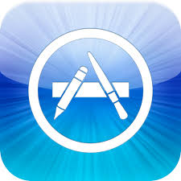

Cómo funciona
Salvar comida es muy sencillo. Vos también podés hacerlo en 4 pasos!
1. DESCARGATE LA APP
Descargate nuestra app desde el Play Store o el App Store:

2. ELEGÍ
Las tiendas asociadas publicarán sus productos en stock. Los productos publicados serán aquellos que si no se venden durante ese día, serán desechados transformando un alimento en perfecto estado en residuo.
3. COMPRÁ
Elegí el medio de pago y comprá tu producto favorito con un descuento de hasta un 70%
4. RETIRÁ
Desde la app podrás localizar fácilmente la tienda. Sólo mostrá el código en la pantalla y listo!
Preguntas frecuentes
Envianos un mensaje. Accedé al formulario de contacto en la sección de "Soy comercio" y envianos tus datos! Un asesor se contactará a la brevedad.
Si! Ser parte de Cykel es totalmente gratuito y obtendrás beneficios para tu negocio (y para el planeta!).
Al ser parte de Cykel podrás vender productos que normalmente terminarían siendo desechos. Al final de cada día, al publicar a precio promocional los alimentos que no se vendieron, tendrán más demanda y se venderán más facilmente. De esta manera, tu negocio siempre tendrá productos frescos, y ganarás plata por algo que antes iba directo a la basura. Además, el planeta también gana! Al reducir los residuos, contribuís a no contaminar el medioambiente.